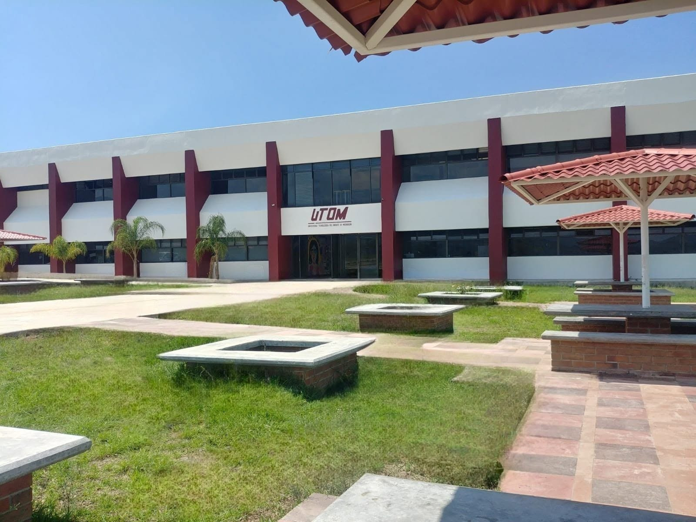

Formamos líderes en desarrollo multiplataforma, inteligencia artificial, ciberseguridad e IoT en la UTOM.
EXPLORAR MAPA CURRICULARAPRENDE TECNOLOGÍAS LÍDERES DEL MERCADO
Multiplataforma, POO y aplicaciones orientadas a servicios.
Ciencia de Datos y Tecnologías Disruptivas.
Informática Forense, Servidores y Redes.

Electrónica digital y gestión tecnológica.
FORMACIÓN EN COMPETENCIAS PROFESIONALES
Obtén el título de TSU al 6.º cuatrimestre e Ingeniería al 10.º cuatrimestre.
Aplica tus conocimientos en proyectos reales durante toda la carrera.
Dos períodos de estadía en empresas del sector tecnológico.
PLAN VIGENTE DE 10 CUATRIMESTRES
INSTALACIONES Y TALLERES EN MARAVATÍO